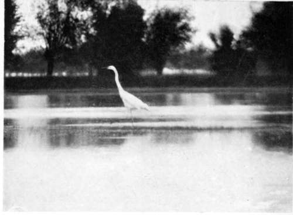
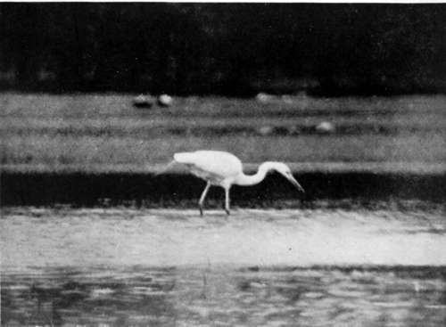

The Search After The Great White Heron. Part 5
Description
This section is from the book "Bird-Hunting Through Wild Europe", by R. B. Lodge. Also available from Amazon: Bird-Hunting Through Wild Europe.
The Search After The Great White Heron. Part 5
All this was very painful, and though perhaps some of these tales were slightly coloured by national prejudice, still I knew enough to realize that in the main these terrible accounts were true, and also that it has only been through great difficulty and constant fighting that Montenegro has until now preserved her independence. But whether the protection of England is really desired by the people I am not in a position to say. I know that England is still regarded with gratitude and affection ever since the British fleet made a demonstration in Dulcigno harbour and compelled the Turks, who were advancing to the attack, to retire, and I can quite believe that if the protection of any country became necessary they would prefer that of England. But I must say that I was very glad when finally, at a very late hour, they retired to their room and left me free to go to bed, for I had had a long and tiring day.
The next day we boarded the steamer for the return voyage to Scutari. If possible, this steamer was smaller and dirtier than the one in which we had gone to Plavnica. Besides which, the captain, the engineer, the agent, and several passengers were exceedingly drunk on the bridge. Singing and shouting, throwing empty bottles about the deck, and reeling to and fro, they caused a pandemonium I have never seen equalled in any ship in any part of the world-and I have seen some curious sights, too, in my travels. Luckily the steersman and the engineer in charge of the engines were sober, and the weather was fine, so that in due time we reached our destination.
In my innocence I imagined that, as we had passed the custom-house only three days ago we should have no more trouble ; but I was soon to know better. Luckily I had determined not to bring a gun in case of confiscation, only a revolver in my pocket out of sight; but the officials quickly got to work a la Tutrque, and my things were strewed about all over the floor. I had with me tools and materials for preserving birdskins, and when they found a bag of plaster of Paris, and asked what it was, I told them ' Poison, arsenic.' The man who was holding it at once dropped it as if it were red-hot, much to my amusement. But he soon found a piece of insulated copper wire belonging to the electric camera and took possession of it. Anything of the nature of electric apparatus is always regarded with great suspicion here, where they have a lively apprehension of bombs. However, as I could not replace this I quietly took it out of his hands and put it in my pocket. Next moment the dry battery was unearthed. This confirmed their suspicions, and I had to give up again the rescued wire, and they were promptly confiscated. I was by this time thoroughly angry, and told them in plain language what sort of fools I thought them, that the electric arrangement was only for photographic purposes, and that I should complain to the Vali, or Governor-General, and insist on their return, and that he, the Vali, had received telegraphic orders from Constantinople to assist me, and had personally given me permission to do as I liked here.
Though I thought I made a decided impression by all this, they still refused to give them up. But by making a complaint to the British Vice-Consul, who, by the way, was a wealthy Albanian who could speak no English, they were compelled to restore them to me within a couple of days.
That evening my hopes were again raised by a visit from the secretary of the Austrian Consulate, to whom I had brought an introduction from Baron B-. He told me that he had, at my request, sent a fisherman, whom he sometimes employed, to search for nests of the White Heron while I was at Plavnica, and that he had reported the finding of several nests with eggs.
This circumstantial report, from a man described by M. Ljoubanovitch as trustworthy, seemed at last to promise well. It was agreed that Ljoubanovitch and myself should accompany this fisherman to the spot where he had found the nests, that he was to come for me soon after daybreak, and that we should go down to the custom-house to embark together.
This was done, but the morning again was most unpromising. We started in heavy rain, and my companion, who was crippled in one leg with longstanding rheumatism, was in such evident pain that I refused to allow him to proceed, and said I would go alone with the fisherman and his son.
They were Turks, and of course I could not speak a word to them, but they were very civil and plausible, and I thought I should be able to manage with them. However, the rain got worse and worse, the wind rose, the thunder rolled just over our heads, and the lightning ran in sheets over the water. It was a terrible day, and several times we took refuge behind a tree before we could proceed. After some hours of this my boatmen at last refused to go on. Their hands shook, their teeth chattered, and their dusky faces went an unearthly pallid blue-grey colour. They were evidently 'done,' and absolutely unable to proceed. The fact is these Turkish fishermen, though muscular and very strong, are soft, and unable to stand bad weather. The day was certainly as bad as I have ever experienced ; but I am sure no English boatman or fisherman would have been in such a state of collapse as they were.
There was no help for it, of course, and I was compelled to return, nolens volens. The next day we tried again, this time taking my interpreter, Djouraschkovitch. Again we had heavy rain on the way, but eventually it cleared up, and we reached a submerged forest where the nests were supposed to be. The interpreter was left on a sandy island while we attempted to force the londra (boat) into the forest. It was, I saw at once, too big for the work. The trunks were close to one another and matted together in inextricable confusion with fallen trees and branches, creepers, and every description of obstacle. By dint of great exertion, all three of us pushing with the oars with all our strength, we managed to penetrate perhaps 100 yards into this labyrinth, and there we stuck. At this point I went overboard up to my waist and pushed behind, while the two Turks worked with the oars against the trunks of the stunted trees, and in this manner we progressed about as far again. Then the men began to look about as if they had reached the spot. It was not possible to see more than a few yards on each side of us, so I took my revolver and fired a shot, hoping to see Herons rising from their nests against the sky. But no such result happened. There was evidently nothing there, and we returned, with the same difficulty, to where we had left the interpreter, as I felt that some explanation was desirable.
Attitudes Of Great White Heron When Feeding
Continue to:
- prev: The Search After The Great White Heron. Part 4
- Table of Contents
- next: The Search After The Great White Heron. Part 6